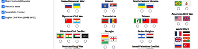
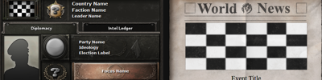
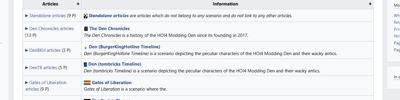
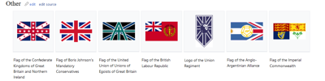

Home of the President of the Independent Republic of Havering
Links
Social media
Twitter: @tombruhcks
Discord: tombricks#8755
My stuff

Conflicts
Simple webpage that allows you to choose which side you support in various conflicts.

HOI4 Country/News Generator
Simple webpage that allows you to create a HOI4 Country diplomatic screen and news event to go with it. Similar to superevent templates. Click here for the TNO version with a superevent.

AnotherWorld Wiki
AnotherWorld is a wiki hosted on Miraheze, run by myself, that contains pages for all kinds of scenarios. Anyone is free to contribute their own pages.

Gallery of my Flags
A page on the aformentioned AnotherWorld wiki that holds all my flags I design.
Stuff
Unitary parliamentary republic
HOI4 GFX portfolio?
HOI4 Mod Ideas Imperium Britannicum - Various
Imperium Britannicum Classic - Following an alternate outcome of the First World War, Oswald Mosley rises up to become the first fascist Prime Minister and embarks on expansionist wars from France to China. Allied with the Japanese and Siamese Empires, Britain stands strong as the greatest power in the world. Vivat Rex - Following the death of King William IV, Ernest Augustus succeeds to the thrones of the United Kingdom and Hanover. Leading on from his extreme Conservative tenure as a member of the Lords, he maintains a conservative and imperialist order with the British Empire strolling into the 20th century as a maintainer of the imperial way. IMPERIVM BRITANNICVM - Centuries after the American Revolution, the world remains locked in a cold state of tension between the two great powers of the globe - to the east of the Atlantic, the Great British Empire is centered on London and defends the way of imperialism, monarchism and aristoracy. To the west of the Atlantic lays the United States of America which defends and spreads a growing international order of liberty and democracy. Prime Sovereign - The Emperor of Britannia is, without a doubt, the most powerful figure in the world. As the Prime amongst the Sovereign, those Earthly territories not belonging to him are belonging to the London's satellites. However, there is a whisper growing. A libertous French resistance movement is growing and could spark the end of the League of the Empires.
Workers of the World - The year is 1975 and the world is locked in a cold war between the Soviet Union and the People's Republic of China which are fighting for control and leadership over the international communist movement. Mushroom Wars - The Mushroom island is divided between the Mushroom Kingdom and the rival Koopa Republic. The Mushroom Kingdom is in political deadlock with a highly divided parliament full of radicals and moderates alike. The extreme nationalist-aligned and heir to the throne Princess Peach is likely to begin her reign soon with her father's ailing condition and nationalist leader Mario Mario is highly anticipated to become the next Chancellor. This serves as bad news for the Koopa Republic which is a revolutionary and collectivist state led by the military dictatorship of Bowser.
 tombricks website 1.0.3
tombricks website 1.0.3